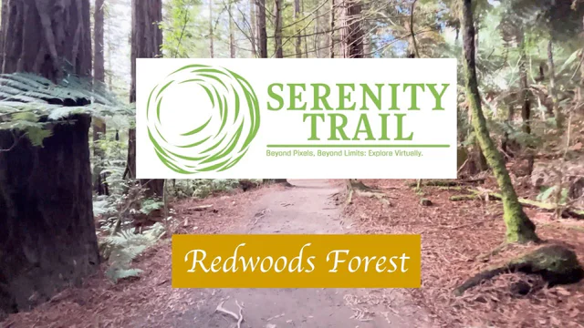

Home
A slideshow, a welcome and four destinations.
Team project · 2024
Four New Zealand walks, filmed by our student team. Explore gardens, forest, coast and wetland through the original trail films.
My roleThe four responsive front-end pages

29:37 · Hamilton
Formal gardens, long pools and quiet paths.

23:42 · Rotorua
Follow a forest track beneath redwood trees.

21:13 · Tauranga
A coastal walk beside sand and open water.

24:05 · Waikato
The boardwalk through the wetland at Lake Ngaroto.
Original films by the Serenity Trail team. YouTube loads only when you press Play.
01 Website Experience
Four connected pages brought the trail films, project story and contact experience together, with layouts that adapt from desktop to phone.
Local reconstruction from the original 2024 source.
Personal details are demonstration replacements. Scenery uses authorized frames from the team’s films.
A slideshow, a welcome and four destinations.
Four films, integrated into the page.
The project vision and interactive team cards.
Contact cards, feedback and a useful map.
02 Engineering & My Contribution
I built the page layouts, styling and responsive navigation, and integrated the front end with the team’s Flask templates.
A photo slideshow and four destination tiles, each leading straight to its trail film.
A film gallery with alternating video and description layouts that stack naturally on phones.
Location and contact cards, the Message Us form layout and a dedicated map section.
The project’s vision and interactive team cards that reveal each person’s role.
Teammates built the initial static draft, backend, form submission, map integration and deployment. I also integrated the team’s pull requests.
School project demo locationHamilton, New ZealandOpen in Google Maps (opens in a new tab)Jinja templates connected the four pages to the team’s Flask app. Contact messages were stored in SQLite through SQLAlchemy, with a separate admin view. The team handled Docker and deployment through GitHub Actions.
The original 2024 site is archived. The films above are the team’s original published videos.
This project taught me to give backend teammates predictable markup and clear interaction points. Reusable navigation, direct links to each film and layouts that adapt to small screens made the four pages feel connected.
I would build on that with tested colour contrast, keyboard navigation and media that loads on demand, as the films do in this case study.